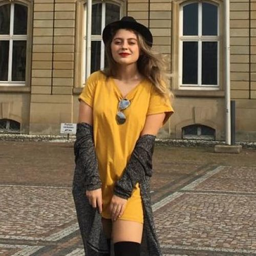

Erst mal ein Bild von mir:
Wie in der Überschrift steht, heiße ich Esra. Ich bin 23 Jahre alt und werde 24 im November Machen wir einfach mal im Stil eines Grundschulsteckbriefes weiter. Meine Hobbys sind Sport, Serien schauen, Spazieren gehen und ich sage zwar gerne auch Lesen... Nur weiß ich nicht, wann ich das letzte Mal ein Buch gelesen habe, außer die paar Passagen aus Zydoreks Buechern natuerlich. Aber sobald ich mal mehr Frezeit habe, werde ich das sicher machen... also rede ich mir zumindestens ein.
Ich studiere an der Hochschule Furtwangen. Ich weiß... wer haette das gedacht. Online Medien. Im 2B-Semester, weil ich GIS geschoben habe und erst mein Grundstudium fertig haben wollte vor dem Praxissemester. Ok, und weil ich mein Praktikum erst machen will, wenn die Welt wieder normal ist... Was auch immer normal sein soll, ich habe keine Erinnerungen mehr an die Zeit vor Covid :')